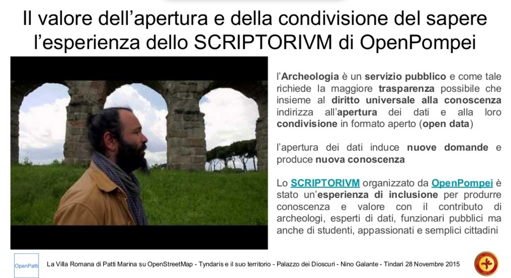

Il 2015 è stato, per OpenPompei, un anno di attività intensa e aperta sul mondo. Abbiamo lavorato tanto in collaborazione stretta e diretta con il territorio pompeiano; con la piccola ma attivissima comunità degli archeologi accademici che producono e usano dati aperti; con le associazioni di Civic Hackers. Le tappe principali di quest’anno sono state lo STVDIVM, cioè una scuola di dati aperti per l’archeologia; lo SCRIPTORIVM, cioè il primo archeo-hackathon d’Italia e uno dei primi al mondo; e TEDxPompeii, un momento di incontro e di raccordo per gli innovatori del Sud, nel segno della legalità. Ho già proposto un riepilogo e una riflessione sul progetto fin qui. L’unica cosa da aggiungere è la nuova versione del sito open data del Grande Progetto Pompei (http://open.pompeiisites.org/), che verrà pubblicata entro fine anno. E’ basata su DKAN ed è stata costruita dialogando in modo continuo con la Direzione Generale del MIBACT che si occupa del GPP.

Ci sono diversi segni che la strategia di apertura, collaborazione con le istituzioni pur mantenendo una forte autonomia di pensiero e di azione, e di leading by example di OpenPompei comincia a funzionare. Diverse persone ci hanno raccontato che si stanno muovendo, stanno prendendo coraggio. L’ultimo episodio di cui ho avuto notizia è la mappatura della villa romana di Patti Marina su OpenStreetMap che secondo il suo realizzatore, il civic hacker siciliano Nino Galante, è direttamente ispirato a OpenPompei. Il TEDxPompeii, con la scelta forte di invitare Roberto Saviano per unire beni culturali e legalità, è stato molto apprezzato, anche fuori dall’Italia. Visti attivismo passato e segnali incoraggiati, immagino che alcuni si aspettassero un turbine di attività dopo l’estate, per poi avviarsi alla fine del progetto. Così non è stato, e sento di dovervi una spiegazione.
{kind=link}
Succede questo: da maggio 2014 (non è un errore, proprio duemilaquattordici) la struttura amministrativa di OpenPompei è andata in sofferenza. Sono successe due cose:
- È diventato via via più difficile utilizzare in modo intelligente la fonte finanziaria di OpenPompei, il Piano Operativo Nazionale Governance e Territorio, per gli amici PONGAT. Nonostante gli sforzi e la competenze di Studiare Sviluppo (la nostra “nave madre”), gli strumenti a nostra disposizione sono venuti riducendosi. Per esempio, ci è divenuto impossibile fare attività in qualunque luogo non sia Pompei; e ci è molto difficile invitare a Pompei civic hackers e archeologi che risiedono altrove, pagando loro il viaggio. La scheda di progetto di OpenPompei specifica con chiarezza che la platea degli stakeholders del parco archeologico di Pompeii, forse il più famoso sito archeologico al mondo, è per definizione globale; e ci assegna il compito di collegare il locale con il globale, il territorio con il mondo. Ma poi non ci dà gli strumenti amministrativi per farlo! Mah. Per fortuna c’è Internet, e molte relazioni sono passate da lì.
- Studiare Sviluppo stessa è entrata in una fase di ritardi nei pagamenti. Fatica a farsi pagare; fatica a pagare i collaboratori (io, per dire, non ho ricevuto ancora nessun compenso per il 2015). Ai ritardi, purtroppo, si aggiunge l’incertezza; non si sa quando e se le cose si risolveranno. Abbiamo deciso di non essere troppo puntigliosi, di dare la priorità a fare le cose, e le abbiamo fatte; però, inutile negarlo, il mix micidiale di pagamenti in forte ritardo, totale mancanza di certezze e ostacoli amministrativi hanno logorato lo spirito del mio team. Dopo la doccia di adrenalina di SCRIPTORIVM e TEDx, dopo le vacanze estive, avevamo in mente una chiusura di progetto molto ambiziosa, ma non siamo (ancora) riusciti a concretizzarla.
La fine di OpenPompei era prevista per la fine di ottobre 2015; a quella data tutti i nostri contratti sono andati in scadenza. Studiare Sviluppo ha chiesto e ottenuto una proroga a fine gennaio 2016 per terminare il progetto con ordine; ha inoltre proposto al mio intero team una proroga dei rispettivi contratti per lavorare su una seconda linea di attività di OpenPompei, che si chiama “azioni territoriali”, e di cui io non sono, nè sono mai stato, responsabile (anzi, non ne so praticamente niente). Anche se mi sembra una buona idea in generale, per quanto mi riguarda ho rifiutato la proroga, perché non mi sento di accettare responsabilità a fine progetto per una linea d’azione che non ho mai seguito, e perché non vedo la serenità amministrativa necessaria per lavorare bene.
Conclusione: io scendo qui. A partire dal 1 novembre 2015 non sono più il direttore scientifico di OpenPompei. Il lavoro fatto a novembre sull’evento di chiusura è stato lavoro volontario; non escludo di farne altro, ma non accetterò più pagamenti, nè responsabilità, per farlo. Il team di OpenPompei resta in sella con contratto prorogato, e sta decidendo su come chiudere il progetto. Continuate a seguire il blog per restare aggiornati.
L’ultima parola è: grazie. Grazie a tutte le persone con cui ho condiviso questa avventura entusiasmante e imperfetta. Impossibile ricordarle tutte. Ho già citato, ma voglio citare ancora, il “mio” team e Studiare Sviluppo, che ha portato la notevole responsabilità di fare da ponte tra il nostro piglio civic hacker e la pubblica amministrazione. Dal lato pubblica amministrazione sono particolarmente grato a Giampiero Marchesi, presidente dello Steering Committee del Grande Progetto Pompei, memoria storica e regista dell’intera policy governativa sull’area pompeiana dalla plancia del Dipartimento Politiche di Sviluppo (oggi Agenzia per la Coesione Territoriale); a Fabrizio Barca, vero ideatore dell’operazione al tempo in cui era ministro, e al suo staff; al Soprintendente Osanna e ai suoi collaboratori (spero che questi ultimi ci perdoneranno alcuni rapporti non proprio idilliaci; alla fine siamo tutti dalla stessa parte, la parte della cultura e della legalità). Un saluto militare al Direttore Generale del MIBACT responsabile del Grande Progetto Pompei, Generale Giovanni Nistri, e ai suoi collaboratori: per merito loro, tutti noi a OpenPompei siamo diventati fans sfegatati dell’Arma. Menzione speciale per il tenente-civic hacker Emanuele Riganelli, che ha sfidato il fuoco nemico un giorno sì e l’altro pure nel nome di trasparenza, legalità, e open data. Dal lato associazionismo e archeologia open, mi vengono in mente Eric Poehler e il Pompeii Bibliography and Mapping Project, Julian Richards e l’Archaeological Data Service, il progetto MAPPA dell’Università di Pisa, la conferenza Computer Applications in Archeology, Wikimedia Italia, Libera, Open Knowledge Foundation Italia, MappiNa, OnData, Spaghetti Open Data, Wikitalia, Monithon, e sicuramente ne dimentico molte altre. Grazie a tutti voi, esco da questa esperienza un po’ più civic hacker, un po’ più esperto di politiche pubbliche, un po’ più ricco di relazioni e del sapere che mi avete regalato. Conosco Pompeii molto meglio di prima, e la sento molto più mia.
E ho capito questo: la strada di OpenPompei è difficile, ma giusta. Ha senso occuparsi di beni culturali dal lato open data, trasparenza e civic hacking. Soprattutto al Sud. Intendo continuare a occuparmene in futuro, anche come presidente di Wikitalia.
I dati di budget di OpenPompei sono pubblicati come open data sul sito di Open Knowledge Foundation. Li trovate qui: ho chiesto che vengano aggiornati, spero che il mio ormai ex gruppo provveda rapidamente..